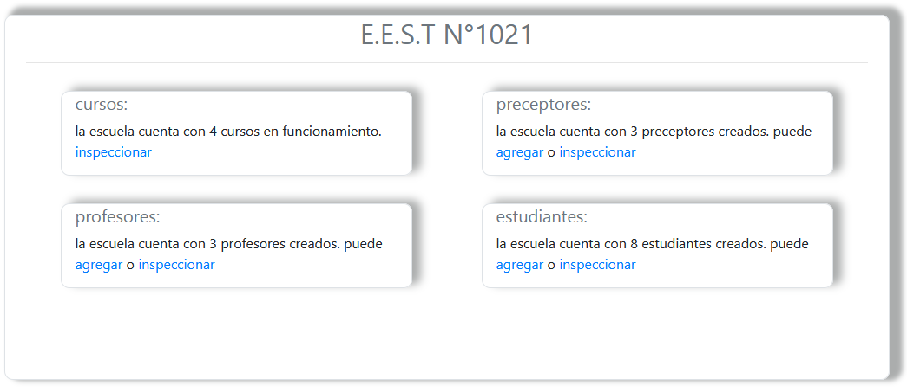
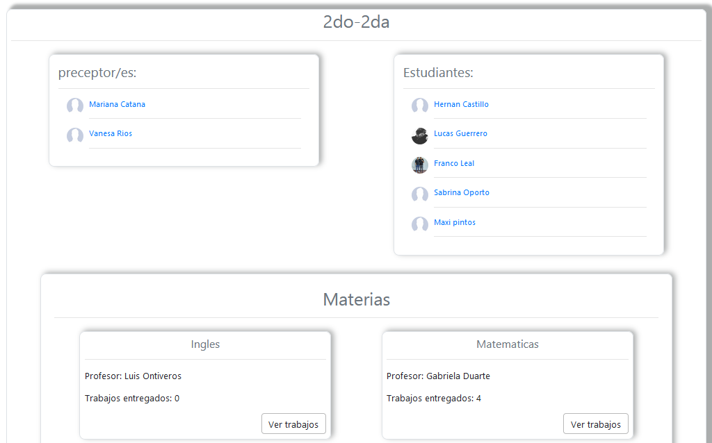

Secretaría

Al entrar al inicio tendrás disponible 4 opciones para administrar. Cursos, Estudiantes, Profesores y Preceptores
Cursos
Después de seleccionar que curso desea inspeccionar podrá acceder a un chat privado tanto con los profesores y los estudiantes haciendo click en sus respectivos nombres. Además puede ingresar a todos los trabajos por materia en la parte inferior de la pantalla
